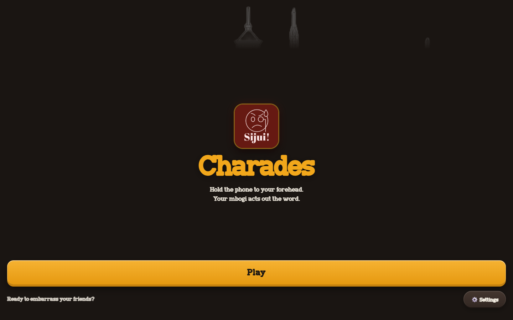

Sijui Charades — Mobile Party Game
A lively Kenyan-themed heads-up charades game engineered for party rooms, family gatherings, and road trips. Features landscape orientation lock, device tilt detection, Kenyan pop-culture card decks, and team round scoring.
Mobile Heads-Up Game Hub
Runs instantly in any modern smartphone browser without needing App Store or Play Store downloads. Players place the phone to their forehead and tilt to guess.
- > Players can jump straight into a round with zero installation friction.
- > Hardware motion sensors detect tilting down for a correct answer or tilting up to pass.
- > Synthesized audio cues provide energetic feedback as the timer counts down.

Live Guessing Rounds & Timer
A high-visibility landscape interface with clear bold lettering and vibrant feedback indicators so friends across the room can read the prompt effortlessly.
- > High-contrast text design ensures readability from distance in lively party settings.
- > Configurable 60s, 90s, and 120s timer modes for casual and high-stakes team battles.
- > Instant round summary showing guessed words, passed words, and total points.

Kenyan Pop-Culture Decks
Packed with local humor, Sheng terminology, viral memes, Kenyan celebrities, and Nairobi landmarks that spark instant banter.
- > Curated decks including Sheng Street Slang, 90s Kenyan Hits, and Matatu Culture.
- > Dynamic deck shuffling algorithms guarantee fresh card draws every round.
- > Team and solo modes allow head-to-head competition with live scoreboards.
Project Overview & Goals
Sijui Charades was created to bring locally relevant Kenyan comedy, Sheng expressions, and pop culture to the beloved heads-up guessing game genre. Unlike traditional static apps, it runs directly in the mobile web browser with zero app-store download friction.
Players pick a category (Kenyan Celebrities, Matatu Slang, 90s Throwbacks, Food & Places), place the phone on their forehead, and tilt down to score a correct guess or tilt up to pass.